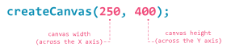

Although constantly visualizing the 'grid' of your project canvas can be overwhelming, that's not all we must at least be aware of when creating illustrations. There are two functions provided within every p5.js editor sketch or project: function setup() { } and function draw() { }. In order to understand how both of these functions work, we have to understand that our browsers, the software we use to request and view different web pages, interprets or reads our code line by line, in the order the lines of code were written.
Although the programming canvas for your p5.js sketch is
blank until you write some code, it helps to imagine a grid originating from
the top left corner of your canvas (0,0) that increases from left to right across the
X axis, and top to bottom along the Y axis.

Each shape used in a p5.js sketch
exists upon the (invisible) X, Y coordinate grid of your programming canvas (or HTML canvas, but more on that later).
Even though it may look as if our computer is executing our code in a single instant, JavaScript, the programming language that the p5.js library was built on, actually interprets our code from the first line that's written until the last. This is why when we begin illustrating with p5.js shape functions (like rect() and ellipse()), we notice that the final shape function called on the last line of our code is always the top-most visible 'layer' on our canvas. Unless, of course, a loop or conditional satement is in affect. (But we really should worry about understanding what those are that after we feel comfortable layering multiple shape function calls to design and illustrate our basic ideas.)
As you can see, there is more than one way we can design a star illustration using basic shape functions. But overlapping stroke lines can be distracting. Using noStroke(); and a fill function, we remove any distracting outlines, presenting you with a complete, complex shape.

It's as if every line of code that calls a shape function is telling your browser to cut that shape out of pixelated construction paper, and then glue it down on top of your programming canvas in the place you described-- regardless of whether or not something has already been drawn on that X, Y coordinate. This is also why when you include the background() color function on the last line of your project's code, then the very last instruction your web browser would interpret and execute is placing an opaque background color on top of all the visuals that are drawn before that final instruction.
Being able to slow down and break down each step the web browser is carrying out as a result of your code is a skill that naturally develops over time, and a very important one at that. Thankfully, programming visual projects makes it easier to form this understanding of how and when lines of JavaScript code we write are being executed, (at least within our p5.js sketch). function setup() { } and function draw() { } allow us to control the flow and order of our instructions even further.
and Preparing your Project Canvas
with the createCanvas() Function
You can think of function setup() { } as your program's start up process. Just as photographers need to load film into older cameras and painters need to prepare their brushes and canvas before they begin painting, p5.js requires a specific start up procedure before we're able to draw anything to our own programming canvas by writing code.
Even if you were to leave the curly brackets { } of function setup() { } empty, your p5.js code would still cary out a beginning procedure which, by default, provides your screen with a very tiny 100 x 100 pixel canvas or drawing space (which can be changed in the settings menu of your project). One way to take advantage of function setup ( ) by creating a canvas with specific diemensions using:
The createCanvas( width , height ); function allows you to specify what size you'd like your programming canvas to be.
In Closing...
Again, it’s easy to underestimate what kinds of shapes we can program. If there are certain shapes that feel impossible to realize in code, try drawing them out on grid paper beforehand. After you've successfully combined simple shapes to create more complex ones, try attempting to illustrate an entire landscape inside the curly brackets { } of function setup() { }.
Look over the example project by clicking the p5.js logo in the right-hand corner if you get stuck. Or, check out some examples others were kind enough to share.
Please reach out with your project via email: talleykristian@gmail.com if you'd like to share your example here. Preference given to p5 editor links with screenshots attached!
If you feel adventureous, go ahead and attempt your landscape illustration inside the curly brackets { } of function draw() { }, although it's quite a bit different than function setup() { }. We'll be exploring how, why and what possibilities these differences unlocks for us in the next chapter.